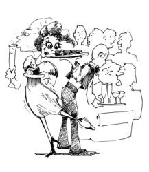

This page has usage examples for the following words:
artificial nutrients 人工栄養剤 じんこうえいようざい
a multi-vitamin supplement, a multi-mineral supplement
総合ビタミン剤 そうごうビタミンざい
calories カロリー
carbohydrate 炭水化物 たんすいかぶつ
chemical fertilizer 化学肥料 かがくひりょう
fat 脂肪 しぼう
fiber 繊維 せんい
grain 穀類 こくるい
health food 健康食品 けんこうしょくひん
nutrition 栄養 えいよう
natural foods, organic foods 自然食品 しぜんしょくひん
organic foods 有機食品 ゆうきしょくひん
protein 蛋白質 たんぱくしつ
pesticide 殺虫剤 さっちゅうざい
vegetarian 菜食主義者 さいしょくしゅぎしゃ
vitamin tablets ビタミン剤 ビタミンざい

I am a vegetarian. I do not eat red meat or chicken, but I do eat fish occasionally.
私は菜食主義なので、お肉は食べませんが、たまに魚は食べます。
わたしは さいしょくしゅぎなので おにくはたべませんが、たまにさかなはたべます。
People tell me that I look well and have a good complexion. My nails have good color.
顔の血色やつやがいいと人に言われます。爪の色もいいと思います。
かおのけっしょくや つやがいいと ひとにいわれます。つめのいろもいいとおもいます。
I am confident that I am in good health, but I would like to gain more stamina.
健康には自信がありますが、もっとスタミナをつけたいのです。
けんこうにはじしんがありますが、もっとスタミナをつけたいのです。
What nutrients do I need more of?
どんな栄養素をもっと摂るべきですか。
どんなえいようそを もっと とるべきですか。
What kind of nutritional supplements should I take?
何の栄養剤を摂ればいいですか。
なにのえいようざいを とればいいですか。
A conversation between a patient and a doctor about nutrition
Patient:
It is busy every day. Because I am pressed for time, I cook simple meals or eat out similar dishes, day after day. As I worry that I am not getting balanced nutrients, I am planning to take vitamin supplements. I hear that nutrients are not only of natural foods but also of artificial nutrients. Don’t they have ill effects on the body?
忙しい毎日。時間がないので簡単なお料理を作ったり、外食で同じようなものを食べる日々が続きます。しかし栄養のバランスに偏りがあるのではないかと少々気になります。そこで、不足していると思われる栄養素を、ビタミン剤などの栄養剤で補おうと思うのですが・・・。栄養剤は自然食品から作られているものばかりでなく、人工栄養剤もあるということですが、逆に、身体に悪い影響を及ぼすということはありませんか？
Doctor:
While we are inundated with health information, daily lives become hectic and many of us feel that our physical and nutritional lives are far from ideal conditions. And, for some vitamins, we have to eat a lot of food in order to obtain a satisfactory amount. In that respect, nutrients are not necessarily worthless. However, not all nutrients contain all necessary vitamins, and some nutrients supply only calories. What you can safely take daily is a multi-vitamin supplement. Lately, a variety of grains has become readily available, and natural or organic foods seem to have become popularized.
健康に関する情報があふれている反面、生活は忙しくなる一方。身体に良いと分かっていながら、運動も食事も理想からほど遠いと思っていらっしゃる方も、多いのではないでしょうか。又、ある種のビタミン類は食品から摂るとすれば、かなり食べなければなりません。そういう意味では、栄養剤も決して無駄ではありません。唯、栄養剤によっては、必要なビタミン剤をすべて含んでいる訳ではなく、単にカロリーだけ補給するといったものもあります。毎日、安心して摂れるものとすれば、総合ビタミン剤でしょう。最近は、各種の穀類が手軽に手に入るようになりましたし、自然食品も一般化したといえます。
What's new in American Health Field 米国健康事情
August 2010
Orthorexia nervosa オートレキシア ネルボーザ
I understand that orthorexia nervosa is a term implying a type of eating disorders. Can you explain it?
Orthorexia nervosa（オートレキシア ネルボーザ）は、ある種の摂食障害をさす用語と聞きました。説明して下さい。
The term was coined in 1997 by Dr. Steven Bratman in Colorado. The Greek orthos means correct or right and orexis means appetite.
この用語は１９９７年にコロラド州のブラットマン医師により造られました。ギリシャ語でorthosは、correct, right（正しい）を意味し、orexisは、appetite（食欲）を意味します。
Thus, orthorexia means a correct appetite. But, when a word nervosa is added, it denotes an eating disorder characterized by the obsession with healthy foods.
Orthorexiaは正しい食欲となりますが、これにnervosa（神経症）をつける事により、本人が正しい食べ物と信じるいわゆる健康食品のみを食べることにこだわる摂食障害を指します。
People with orthorexia nervosa believe that fat, preservatives, man-made food or animal product should be avoided, and eat only fruits and vegetables. An extreme case leads to malnutrition or even death.
脂肪、防腐剤、加工食品あるいは動物由来の食品は不健康で避けるべきだと信じて果物と野菜だけを食べます。症状がひどくなると、栄養障害、ひいては死亡に至ります。
Because they limit what they can eat, they spend less and less time with family and friends, isolating themselves socially.
食べられるものが制限されますから、他人との付き合いもなくなり、社会的に孤立した生活となります。
My two cents 一言おせっかい
健康状態が良い場合は、"I’m in good health." 良くない場合には、 "I’m in bad health." 又は、"I’m in poor health." と言います。
[e02]
| © 1995-2013 NACOS International Institute. All Rights Reserved. |